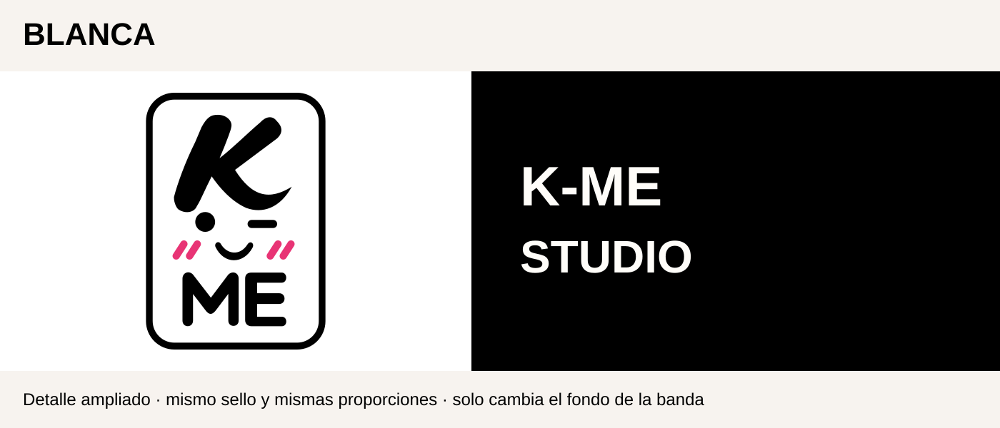
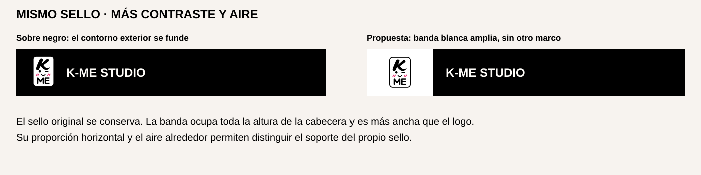
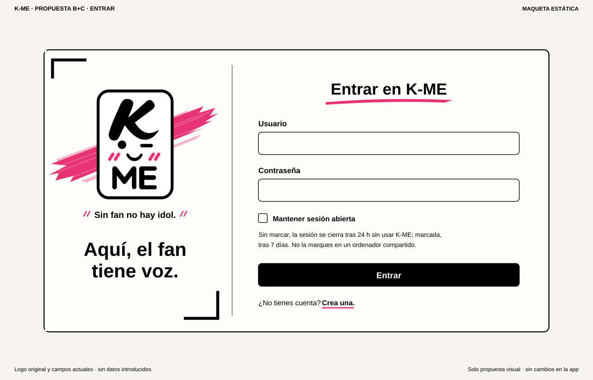
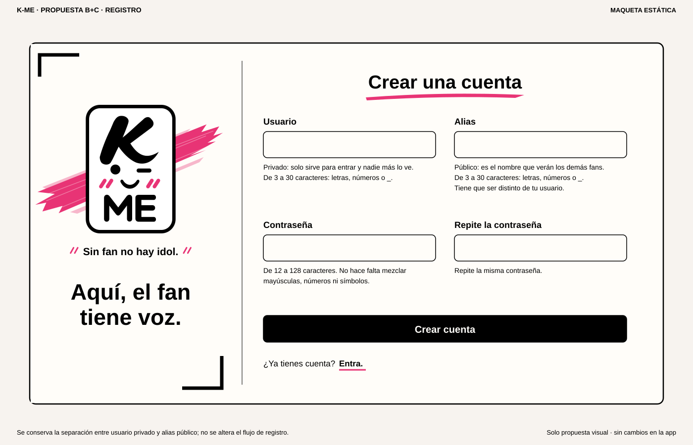
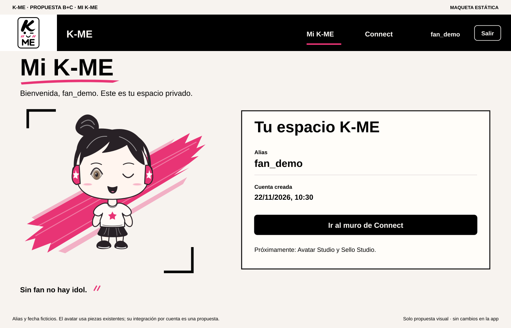
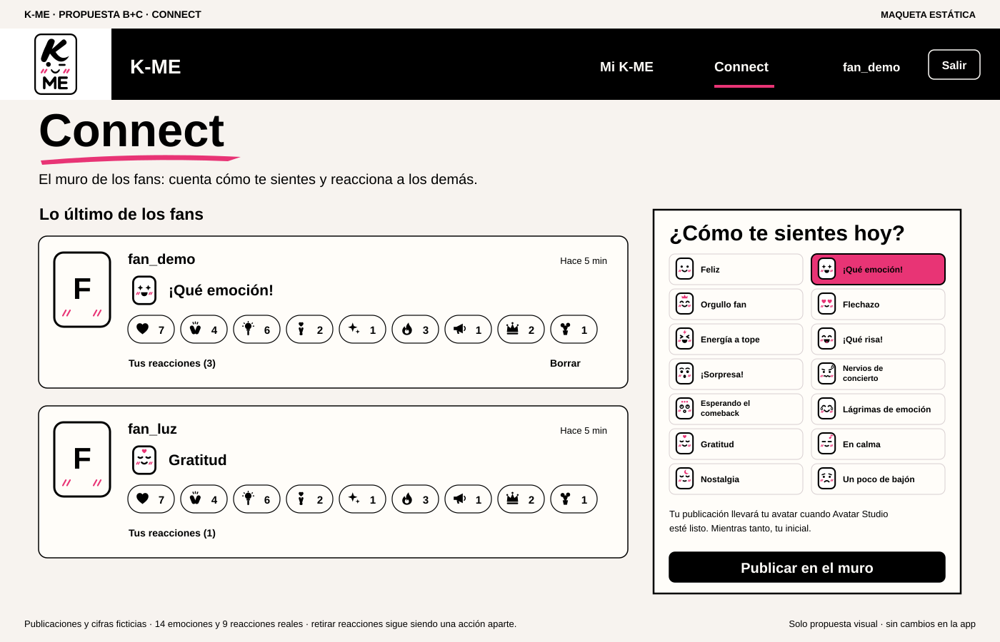

Una identidad común para K-ME
Mockups estáticos con recursos reales. No se han cambiado las páginas ni el funcionamiento de Claude. Las cuentas y publicaciones mostradas son ficticias. El avatar de Mi K-ME es una propuesta visual de integración, todavía sin guardado por cuenta.
El sello conserva su silueta sobre blanco


1. Entrar

2. Registro

3. Mi K-ME

4. Connect

Frase propuesta: «Aquí, el fan tiene voz». Negro, fucsia, papel cálido, misma familia de botones y gestos de pincel. Las páginas de acceso conservan el logo grande sin barra de navegación; dentro de la app la cabecera usa la banda blanca para mantener visible el contorno del sello.
El aspecto de errores, el foco y los tamaños en móvil se tendrán que validar en una implementación posterior. La maqueta no acredita pruebas de accesibilidad ni de autenticación.